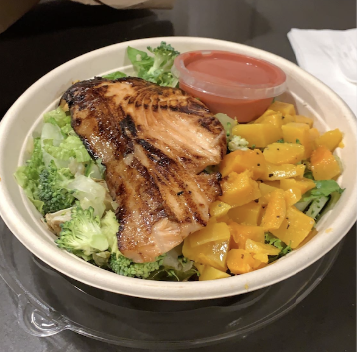
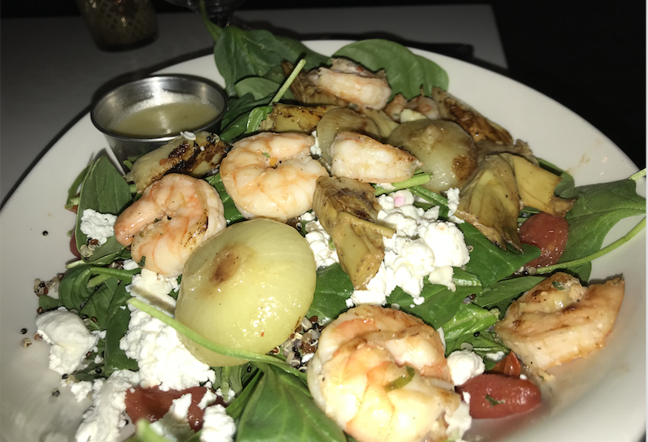

Revive:
My favorite lunch place in Ann Arbor is Revive. Revive is a resturant that has a variety of different options. The unique thing about Revive is their make-your-own-salad bar. I usually always choose this option because the salads are so good and I change up what i get on it everytime. Here is an image of one of my salad creations.

Savas:
Another lunch place that I love is Savas. Savas has a large variety of options on their menu. A few options that stand out to me are the Greek Salad as they make thier own dressing in house, their Mac and Cheese and their Bang Bang Shrimp. You can't go wrong with anything on thier menu!
